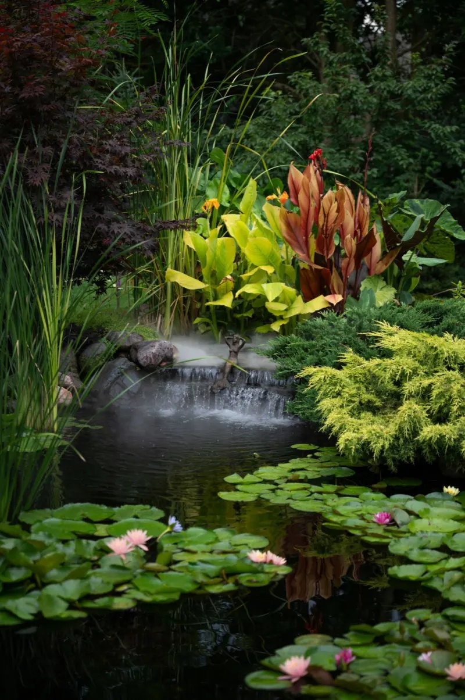
Teichbau
Vom Zierteich bis zum Schwimmteich – geplant, gebaut und ins Gleichgewicht gebracht.
Mehr zum Teichbau →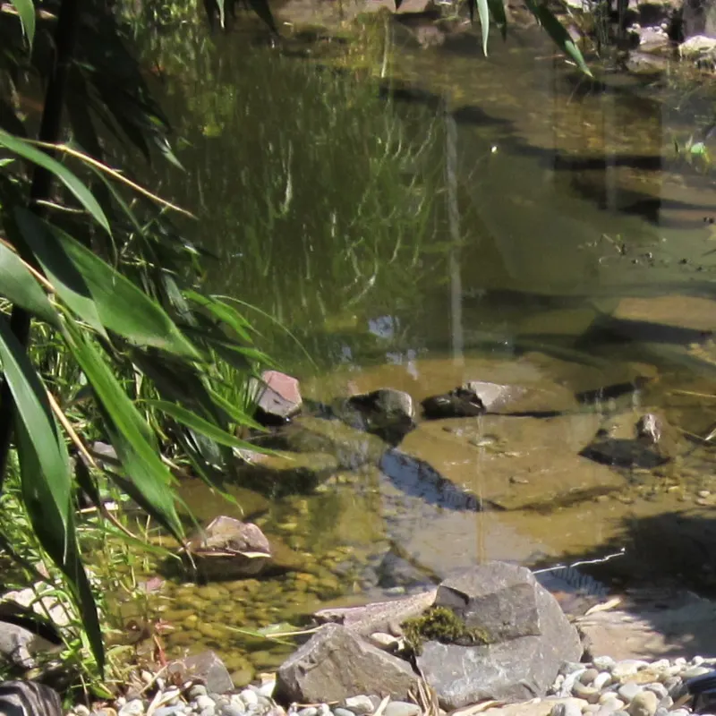
Teich- & Gartenbau · Saarbrücken-Fechingen
Planen, bauen, pflanzen, pflegen – rund ums Haus. Von Schwimm- und Koiteichen über komplette Gartenneuanlagen bis zu Holz, Naturstein und Ganzjahrespflege: alles aus einer Hand, aus der Provinzialstraße in Fechingen.
Leistungen
Ob ein neuer Garten von der Erdbewegung bis zur Bepflanzung oder ein einzelnes Projekt wie Teich, Terrasse oder Treppe: Wir übernehmen Planung und Ausführung komplett.

Vom Zierteich bis zum Schwimmteich – geplant, gebaut und ins Gleichgewicht gebracht.
Mehr zum Teichbau →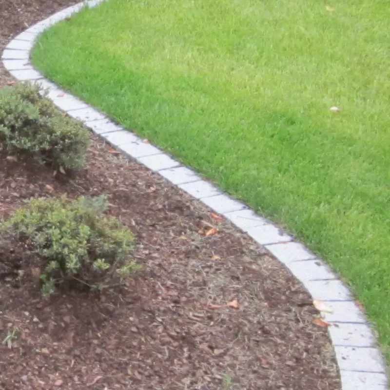
Komplette Neuanlage von Gärten inklusive Erdbewegungen aller Art, Bodenverbesserung und Düngung sowie Bepflanzung. Ergänzend planen wir Gartenbeleuchtung und Dachbegrünung.
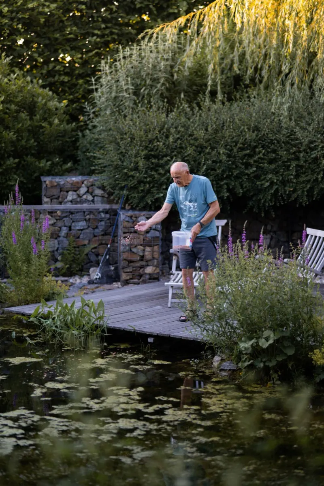
Zäune, Geländer, Pergolen, Gartenhäuser, Terrassen und Sichtschutzwände aus Holz – individuell gefertigt und montiert.
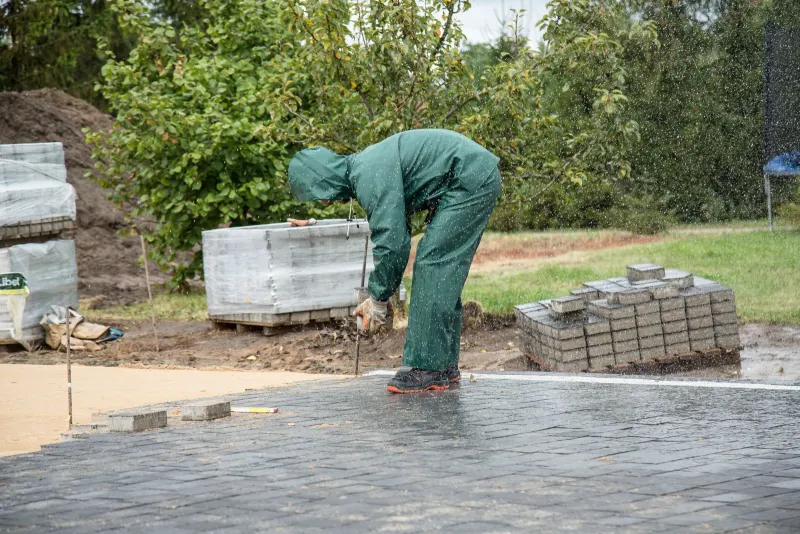
Pflasterflächen, Natursteinmauern, Treppenanlagen und Wegebau. Außerdem Böschungssicherung für Hanggrundstücke – zum Beispiel mit Blockstufen und Gabionen wie in unserem Referenzprojekt in der Galerie.
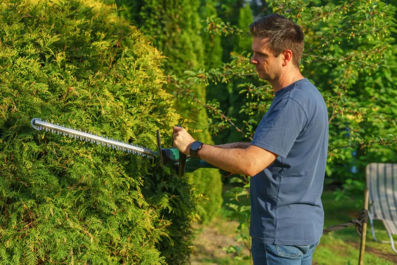
Ganzjahrespflege für private und gewerbliche Gärten: Rasenschnitt, Gehölzschnitt, Baumfällungen sowie Pflege und Fällung von Bäumen.
Unsere Spezialität
Ein Teich ist mehr als ein Loch mit Folie. Wir planen Uferzonen, Technik und Bepflanzung so, dass das Wasser klar bleibt und der Garten mit dem Teich zusammenwächst.
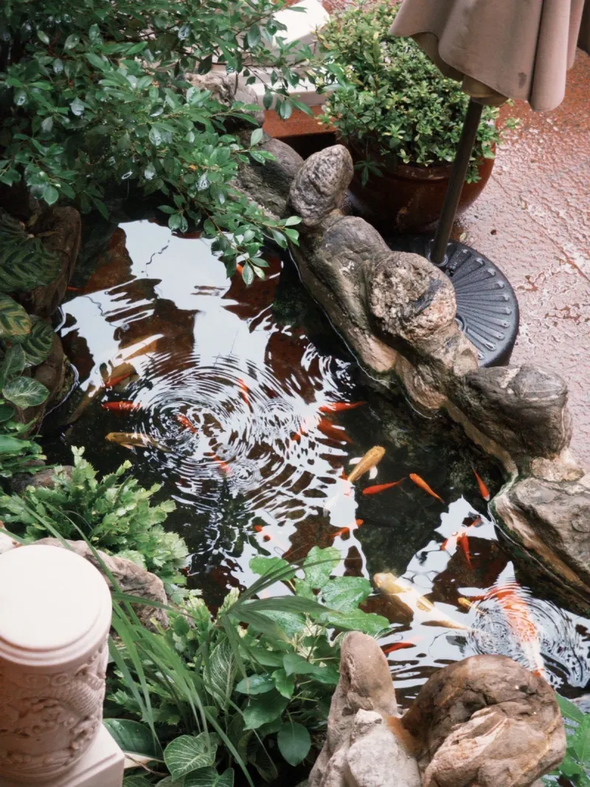
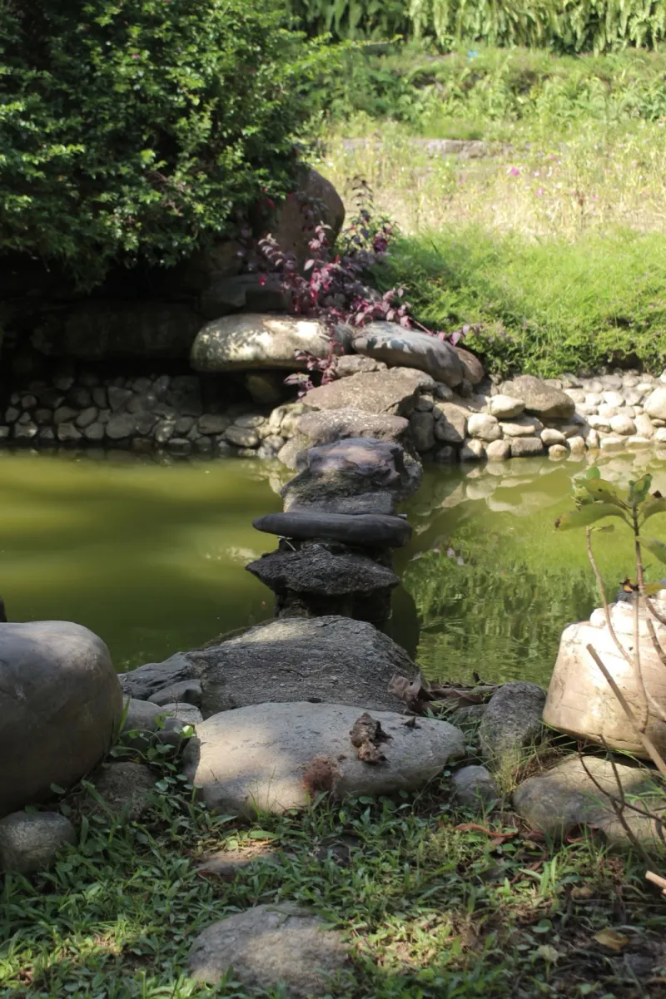
Referenzen
Eine Auswahl von Auftraggebern, für die wir in Saarbrücken und im Saarland gearbeitet haben.
Auswahl – weitere Referenzen auf Anfrage.
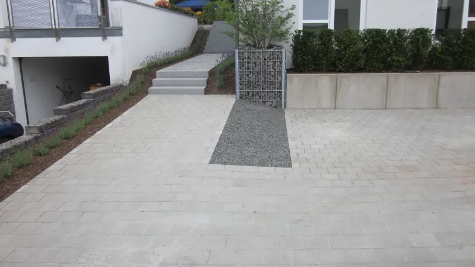
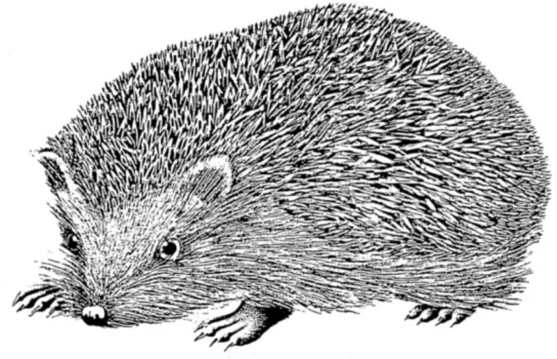
Über uns
Teich- und Gartenbau Menz ist ein Einzelunternehmen aus Saarbrücken-Brebach-Fechingen, aufgebaut von Thomas Menz. Unser Slogan steht über allem, was wir tun – und unser gezeichneter Igel begleitet den Betrieb als Markenzeichen.
„Wir schaffen Lebens(t)räume!“
Beim Landesverband Gartenbau im Saarland e.V. sind wir in der Sparte Garten- und Landschaftsbau gelistet. Wir arbeiten für Privatkunden, Unternehmen, Hausverwaltungen, Stiftungen und die Landeshauptstadt Saarbrücken.
Galerie
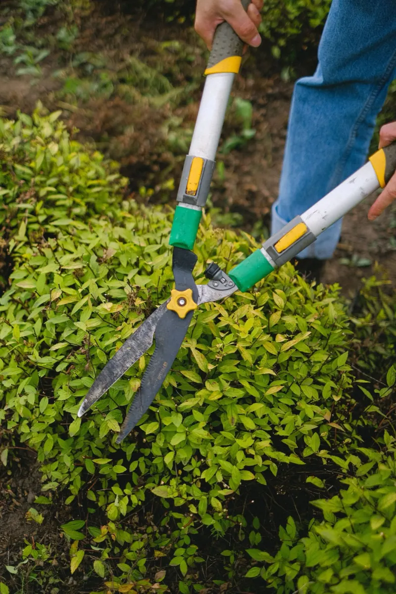
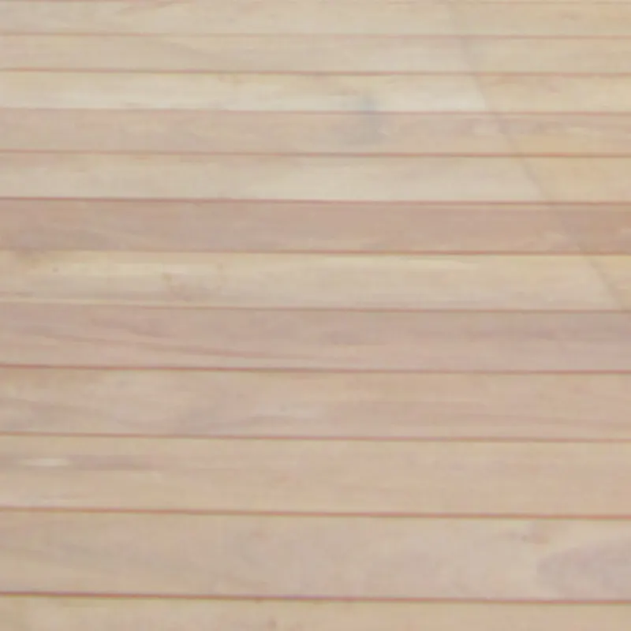
Mit „Referenz“ gekennzeichnete Bilder stammen aus eigenen Projekten; die übrigen Motive sind Symbolfotos und zeigen die Art der Arbeiten.
Kontakt
Rufen Sie an oder schicken Sie uns Ihre Anfrage – wir melden uns und vereinbaren einen Termin zur Beratung vor Ort.
Beratung und Besichtigung vor Ort stimmen wir persönlich mit Ihnen ab. Rufen Sie uns an – wir finden einen passenden Termin.
06893 986171